There are all sorts of evidence of the various intelligences that occupied the earth in the past. Most are buried deep down inside mountains, or fossilized into stone, or twisted and bent into unrecognizable shapes and appearances.
I have cataloged numerous examples for the sake of curiosity. And they are able to tell us some things of interest.
In this article we will look at the discovery of a buried wall… not just a few feet under the ground (a meter), but rather many miles under the ground (kilometers down, down, and down). So far down, and so deeply underground that it is unfathomable how it got there.
Underground Wall
Indeed, often structures are often found deep, deep underground. These structures are frequently manufactured out of quarried stone; stone that is not locally quarried. The problem with such structures is that excavation at such great depths are problematic and require enormous financial outlays.
One such discovery was the 1927 find by W. W. McCormick of Abilene, Texas. Here, he reported his grandfather’s account of a stone block wall that was found deep within an Oklahoma coal mine (The reader should note the location of the wall relative to the Oil Lamp discovery.):
"In the year 1928, I, Atlas Almon Mathis, was working in coal mine No. 5., located two miles north of Heavener, Oklahoma.
This was a shaft mine, and they told us it was two miles deep. The mine was so deep that they let us down into it on an elevator.... They pumped air down to us, it was so deep."
The Location
This location in on the Eastern side of Oklahoma.
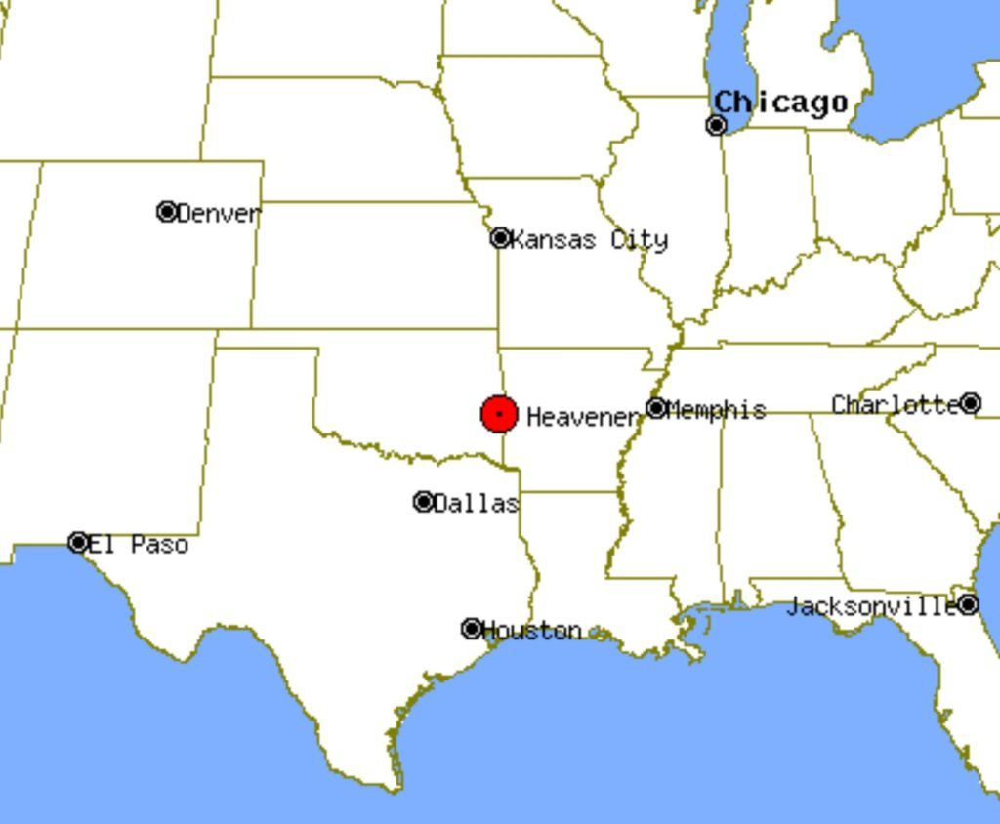
It has interesting topography and geology. Here’s a geologic map of the region. The mine in question could be either in the Arkoma Basin, or part of the Ozark Uplift.
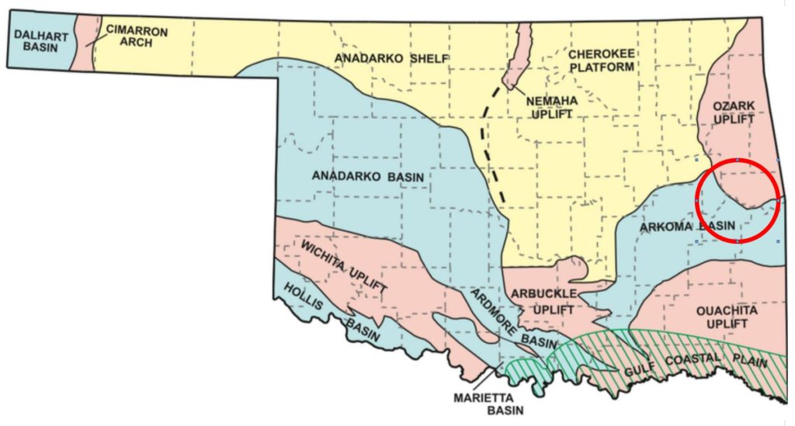
The mines…
Much of the mining done in the Eastern half of Oklahoma are coal and lead-zinc. Given the story, and other stories of objects found in nearby coal seams, it seems quite probable that the story relates to a coal mine.
The two major types of mining towns in Oklahoma were coal and lead-zinc. The coal-mining regions cover much of the eastern half of the state, spanning over twelve thousand square miles. The most prominent coal-producing areas are in the McAlester and Coalgate districts of southeastern Oklahoma. -Oklahoma Mining Towns
The Story
One evening, Mathis was blasting coal loose by explosives in “room 24” of this mine.
"The next morning, there were several concrete blocks laying in the room.
These blocks were 12-inch cubes and were so smooth and polished on the outside that all six sides could serve as mirrors.
Yet they were full of gravel, because I chipped one of them open with my pick, and it was plain concrete inside.
As I started to timber the room up, it caved in; and I barely escaped.
When I came back after the cave-in, a solid wall of these polished blocks was left exposed. About 100 to 150 yards farther down our air core, another miner struck this same wall, or one very similar."
Size of the structure
The “wall” or structure feature is (at least) roughly 125 yards (125 meters) long on one side. That’s a pretty big structure.
The question is, what was it doing in the middle of a swampy lowland?
Age of the structure
The coal in the mine was Carboniferous, which would mean the wall was at least 286 million years old.
The Carboniferous Period
The Carboniferous Period is a geologic time period that took place between 360 to 286 million years ago. The Carboniferous Period is named after the rich coal deposits that are present in rock layers from this time period. The Carboniferous world was a remarkably different one to that we know today, but it is extremely significant nonetheless. The name Carboniferous is Latin for coal-bearing, which is appropriate given that much of the coal reserves we rely on today were formed during this time. Nonetheless, to today’s observer, the Carboniferous Earth would have looked and felt remarkably alien.
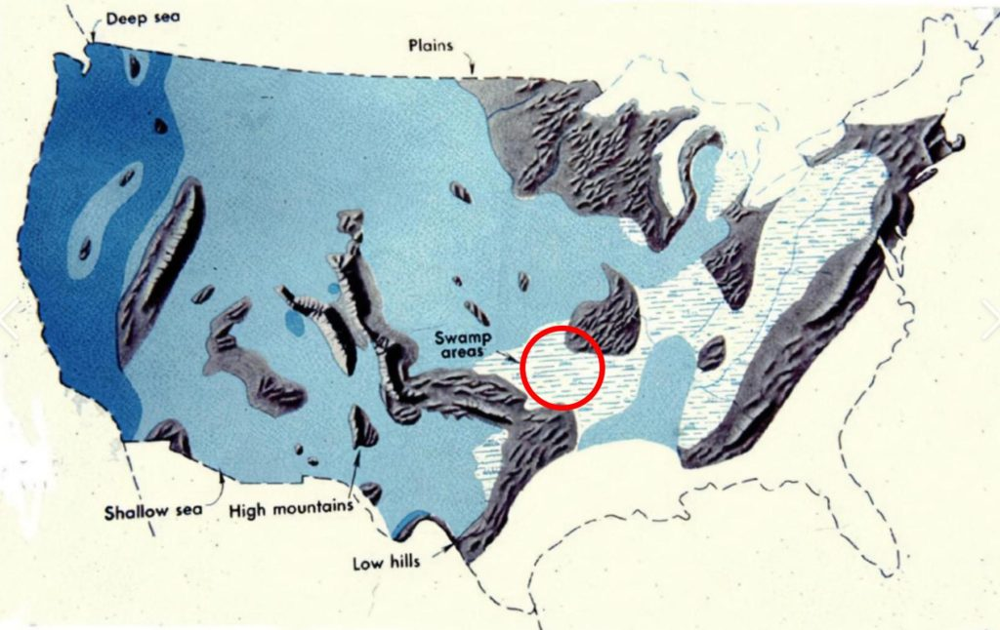
The Age of Amphibians
The Carboniferous Period is also known as the Age of Amphibians. It is the fifth of six geologic periods that together make up the Paleozoic Era. The Carboniferous Period is preceded by the Devonian Period and followed by the Permian Period.
The climate of the Carboniferous Period was quite uniform (there were no distinct seasons).
It was also more humid and tropical than our present-day climate. The plant life of the Carboniferous Period resembled modern tropical plants.
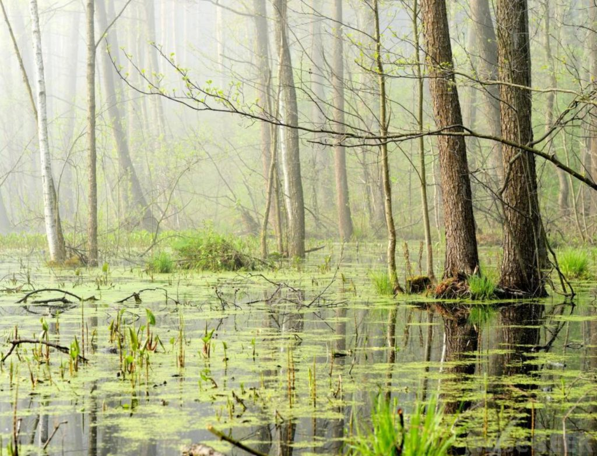
The Carboniferous Period was a time when the first of many animal groups evolved: the first true bony fishes, the first sharks, the first amphibians, and the first amniotes.
During the Carboniferous Period, the vast oceans that covered the earth often flooded the continents, creating warm, shallow seas. It was during this time that the armored fish that had been abundant in the Devonian Period became extinct and were replaced by more modern fishes.
Vast Swamp Forests
Freshwater wetlands increased and formed vast swamp forests. Fossil remains show that air-breathing insects, arachnids, and myriapods were present during the Late Carboniferous.
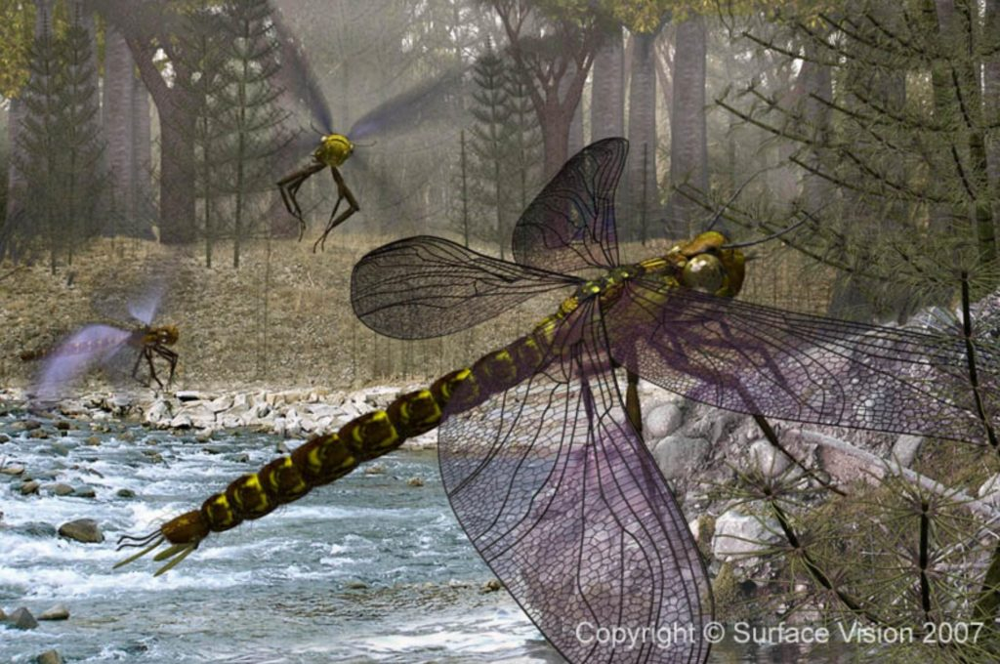
The seas were dominated by sharks and their relatives, and it was during this period that sharks underwent much diversification.
The Air Was Completely Different
The Carboniferous, as evidenced by air trapped in ice from that period, is known for having the highest percentage of oxygen in the atmosphere ever. If you were to visit the Carboniferous, you’d instantly notice that the air is ‘richer’ to breath, since it reached a peak of 35% oxygen as opposed to today’s 21%. This dramatic difference also allowed insects to grow to truly ungodly proportions.
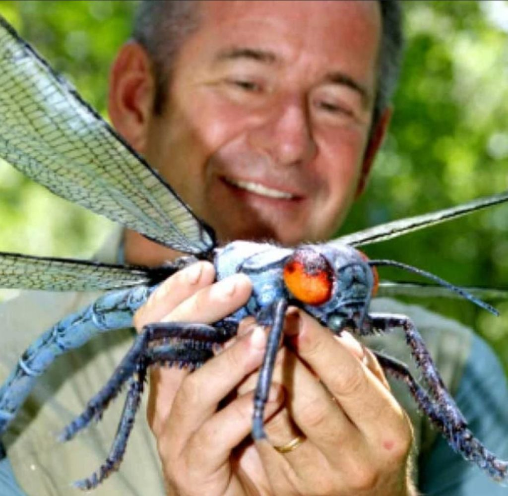
It Was a Time of Enormous Climate Change
The early Carboniferous saw lush jungles and swamps span vast stretches of the world, and the average global temperature was some 6 °C warmer than it is today. The atmospheric CO2 content was also three times higher than preindustrial levels, making for a far stronger greenhouse effect than that which concerns us today. However, from the middle of the period, the glaciers started to advance from the poles, and global temperatures decreased to bring about a severe ice age.
Timekeeping Wasn’t Easy
If you were to be transported back to the Carboniferous, your alarm clock and calendar wouldn’t be much use. 350 million years ago, the day was only 22.4 hours long, and there were approximately 385 days in a year. The Earth’s faster rotation, combined with its thicker atmosphere, also made winds significantly stronger than they are today.
The Map Was Unrecognizable
Since the Carboniferous was so long, the natural movement of the tectonic plates had ample time to change the map significantly, but at no time did it look anything like the one we’re familiar with today.
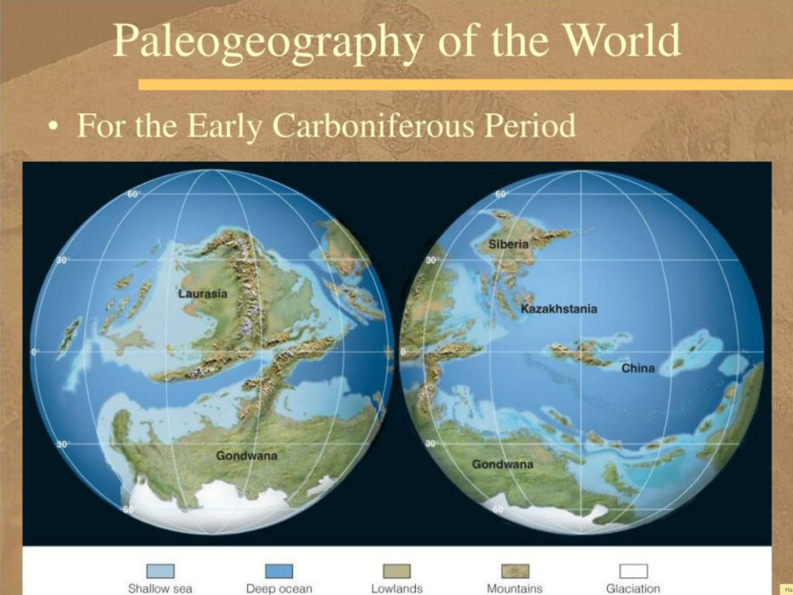
By the end of the period, what is now Africa, the Middle East, India, Australia and South America were all joined together with Antarctica. The Eurasian tectonic plate was connected to this enormous southern content, named Gondwana, by a thick strip of land.
Insects ruled the earth
Long before dinosaurs, birds or mammals existed, insects ruled the Earth, leading the Carboniferous to be dubbed the Age of Insects.
Due to the much higher oxygen levels, insects were able to evolve to horror-movie sizes. The meganeura, for example, was a dragonfly sporting a 30-inch (75 cm) wingspan.
Although not technically an insect, the arthropleura was another enormous creepy-crawly, a millipede that grew as long as a car. Adapted perfectly for the Carboniferous atmosphere, animals such as these would not be able to survive in today’s air.
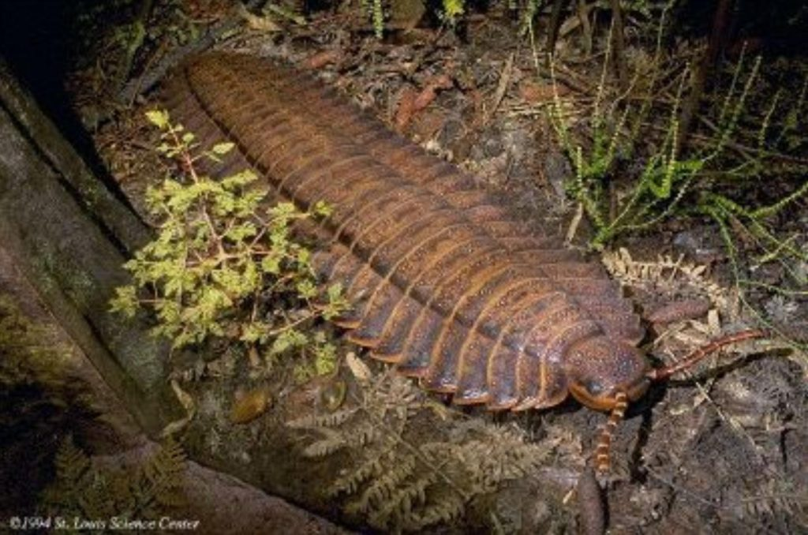
Wow!
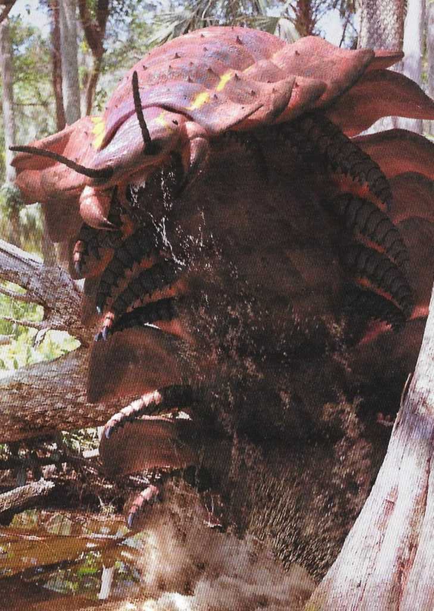
Here’s an interesting write-up on these impressive creatures…
Era & Discovery Arthropleura lived in North America and Scotland during the Late Carboniferous, approximately 315 – 299 million years ago. It lived alongside other animals like Megarachne, Pulmonoscorpius, Meganeura, and even the primitive reptiles and giant predatory amphibians. Since their discovery in 1854, there are many fossilized footprints from Arthropleura can be found on the coast of Scotland in the Scottish land of Arron. Physical Attributes Arthropluera was perhaps the largest arthropod of the Carboniferous and was overall among the largest arthropods that ever lived, measuring on average between 6.6 – 10 feet (2 – 3 m) long, as large as a man or crocodile and as long as a car. However, there were very rare colossal specimens that were discovered to have measured around 20 feet (6 m) in length. Arthropleura is the largest land arthropod known, a huge relative of the modern millipedes closely resembling a giant centipede or millipede. The reason why they were able to grow so large is that oxygen levels were 50% higher than today. The higher oxygen level content in the atmosphere of the Carboniferous could support larger species whose circulatory system was not as efficient as those of mammals and other species. Therefore, it allowed this creature (and many others) to grow to very large sizes. In addition, males and females were different in appearance. Arthropluera was arguably the largest known land invertebrate of all time and would have had few predators (If any as an adult.) Arthropleura was heavily defended by thick, tough, and wide armor plating along its back. Underneath its armor were lots of small legs and a soft underbelly. On its head, it had two pincers and two antennae. The color of Arthropleura varied. Some of them were red with yellow lines whilst some were brown with yellow lines. The body of the Arthopleura was composed of thirty armored plates, which each had a pair of legs under them. However, it was not invincible as large amphibians, like Proterogyrinus, could relatively easily get the better of it. Even its own environment could threaten it. Sharp rocks could easily impale Arthropleura and the superpowered Carboniferous storms were often devastating to Arthropleura as well as other animals. Behavior & Traits Arthropleura was a solitary creature, often foraging on the forest floors of the Carboniferous. Arthropleura was a massive arthropod that they were such powerful beasts. In spite of its daunting appearance, it as a herbivore, feeding on the rotting foliage, dead-wood and leaves on the floor of the steamy Carboniferous Period swamp forests. Although later found out they were vegetarians, their strong jaws can still have delivered a nasty bite. Arthropleura was herbivorous though when they were juveniles, they ate meat because they couldn't digest plants until they grew older. Arthropleura was one of the first animals to eat plants, they had strong jaws, but it is unlikely that it may have been poisonous for defense. Arthropleura was practically blind but had a good sense of smell and touch through which to detect other animals. It is discovered that while Arthropleura was a timid creature, it was also shown to be highly aggressive and could be easily provoked into attacking. Most Arthropleura lived in piles of leaves or foliage or in small underground dens whilst some lived out in the open. As its body armor was colored similar to its surroundings, Arthropleura was camouflaged. However, its armor couldn't protect it from the Carboniferous forest fires. Although the animal would often crouch for cover on the ground, most of the time it was burned alive. Defense When it comes to fighting, their armor was their best defense unless it got split. Much like cobras, Arthropleura could rear up at its opponent so it could tower over it, tall enough to look humans right in the eye. And that rearing up was obviously a defensive reaction. However, rearing up would expose its soft innards and were a bulls-eye for predators. They could spray like modern millipedes and centipedes. They could secrete cyanide. That smells of almonds and when they spray in the eyes of their enemies, and it really burned. Uniquely, Arthropleura was also able to leap long distances, which allowed it to strike at its prey like a battering ram. Additionally, Arthropleura possessed a deadly venom, injected into a victim through a long, thin, metallic-looking tube located behind its mandibles, in a similar manner to an insect bite. When a large mammal such as a human was poisoned by an Arthropleura, the venom would slowly attack their central nervous system, putting the bitten victim into a state of uncontrollable shaking and convulsion very shortly after being bitten, and rendering them barely able to move, before they lost consciousness after a while. An antivenin could be derived from pure samples of Arthropleura venom, but without this antidote, poisoned humans would have a zero chance of survival, dying a matter of hours after being bitten. If one did survive and recover from an Arthropleura's venomous bite, then they would still be left with short-term memory loss.
As did scorpions …
Scorpions are one of the oldest orders animals on Earth, having existed for some 430 million years. However, the early Carboniferous saw the most horrifying scorpion of all – the 28-inch (70 cm) long pulmonoscorpius, and the largest arachnid that ever lived. It’s likely that pulmonoscorpius lived on other arthropods and perhaps smaller amphibians. As is the case with Carboniferous insects, it is thought that the scorpion’s terrifyingly large size was also a due to the higher oxygen levels.
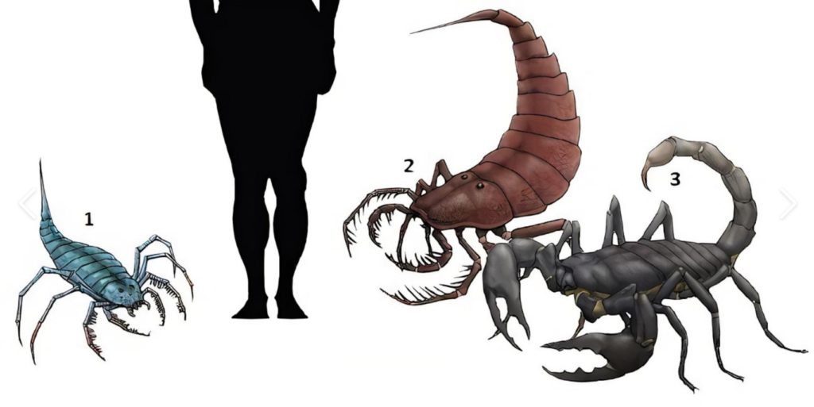
Sharks Dominated the Seas
The early Carboniferous saw sharks at the top of the food chain in the seas, but they weren’t much like the sharks today. Among the stranger of the many species of that period was the akmonistion, characterized by its bizarre anvil-shaped crest and spines on the top of its head. Fortunately, however, at one metre (3 feet) long, it probably didn’t look particularly threatening.
However, the helicoprion, which first appeared towards the very end of the Carboniferous, grew three times longer, and it sported a circular sawblade for jaw.
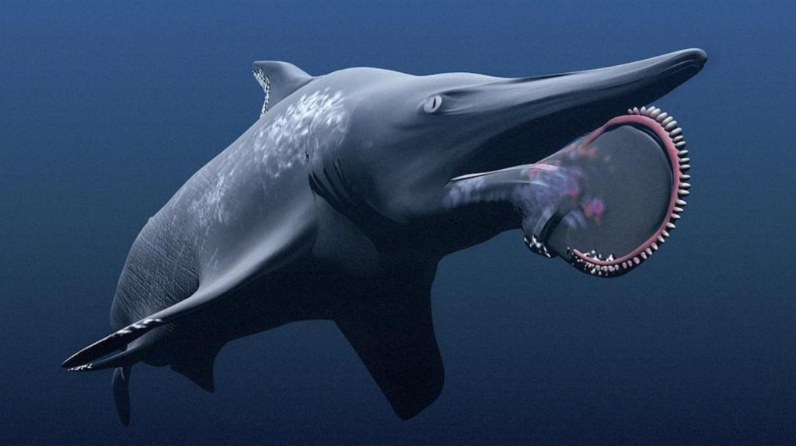
Trilobites Started to Decline
Trilobites, a highly diverse class of marine arthropod, that ruled the Earth for hundreds of millions of years, started to decline rapidly towards the end of the Carboniferous period, likely due to competition with the explosion of versatile sea life. By the end of the period, only three families survived, which themselves became extinct some 250 million years ago.
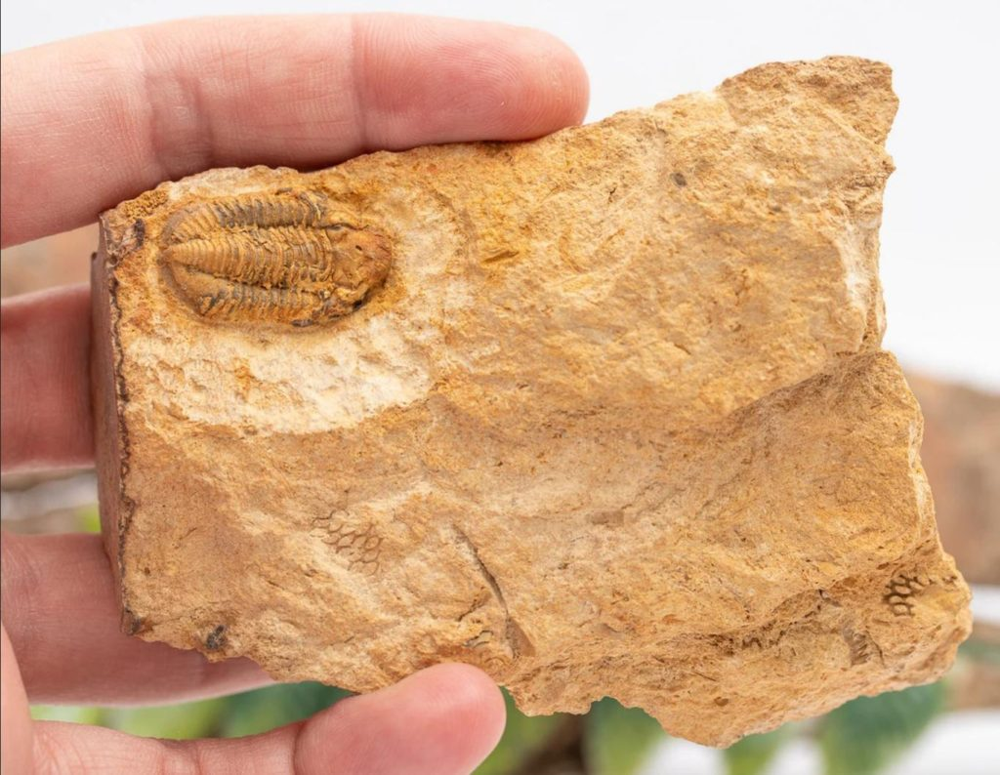
Amphibians Were Highly Successful
Alongside insects, amphibians radiated to form the ancestors of the reptiles, birds and mammals that followed. These creatures made up the taxonomic clade of synapsida, which also includes all mammals.
The earliest of these was the archaeothyris, a lizard-like creature that grew about 20 inches long and lived some 306 million years ago.
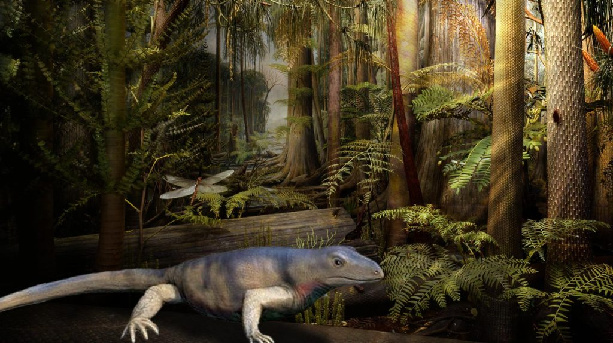
About the wall / structure…
Perfectly smooth sided concrete blocks show an assembly sequence involving exact molds. A mirror finish suggests metal or plastic mold forms with possible release chemical to get the sides so smooth. According to the miner, it appeared to be just everyday utility grade concrete.
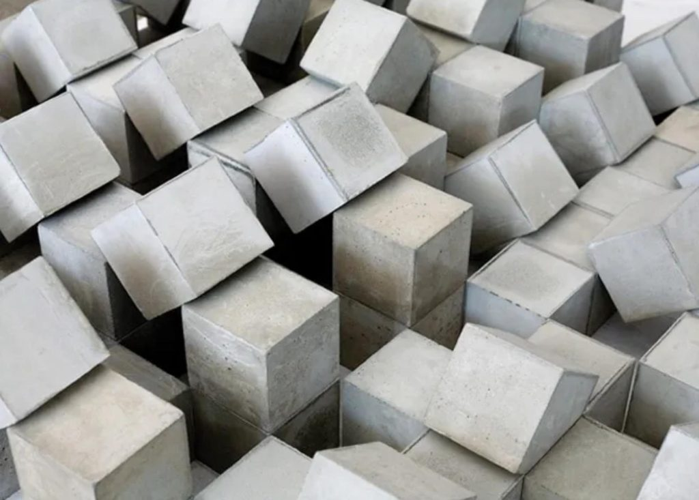
We can say that the use of perfectly square blocks and not rectagles is instructive. As anyone who has played with Legos can attest to, it’s awfully difficult to create an interlocking structure with just simple square blocks.
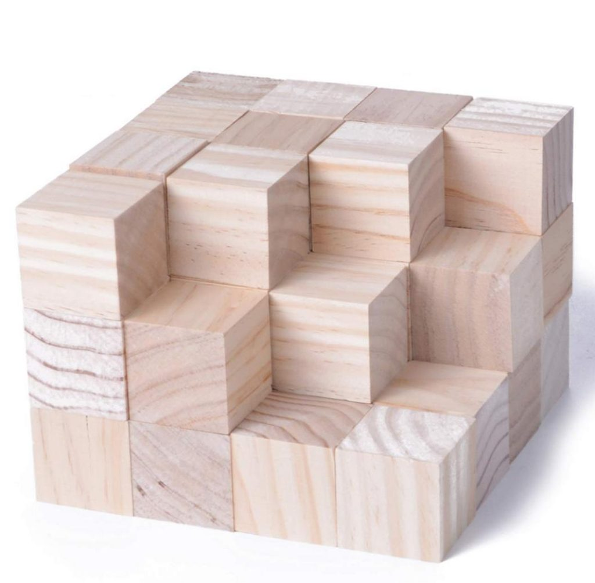
Thus, this is suggestive of a wall, a retaining wall, or some type of decorative finish.
Since, the miner did not say anything at all about this being the outer finish of a structure, we are left to conclude that it was part of a wall, a retaining wall or a rampart of some type.
Followup story
According to Mathis, the mining company officers immediately pulled the men out of the mine and forbade them to speak about what they had seen.
Mathis said the Wilburton miners also told of finding “a solid block of silver in the shape of a barrel… with the prints of the staves on it,” in an area of coal dating between 280 and 320 million years ago.
Musings…
What could this be? Well, I am certainly curious. The things is that we really don’t know much about all this. It’s a wall found in an “impossibly” deep location underground. It’s made out of manufactured cement blocks at a time when the earth was covered in swamps, bogs and populated with large insects.
What else can we figure out?
What we do know is…
- Other items suggestive of metal forgery, utensils, roads, clothing, wheeled transport and creature domestication has been found is nearby / related Carboniferous coal strata.
- Combined together, this suggests a planet-wide series of socities and cultures that lived and thrived within the dense oxygen atmosphere, with it’s enormous insects and creatures.
- Other items, such as the bell, and the wheeled cart suggest a society of dimunitive (child size) intelligent humanoids with insectoid attributes.
These other similiar trending explorations and discoveries are enough to better flush out what this wall-like structure represents.
Rather than a singular lone outpost in a swampy bog-like land, the picture is emerging of a large, planet-wide network of creatures that apparently seem to resemble the mantids as displayed in popular lore. They seem to have lived in societies that were well at home and comfortable in the dense swampy lands that existed on the earth at that time.